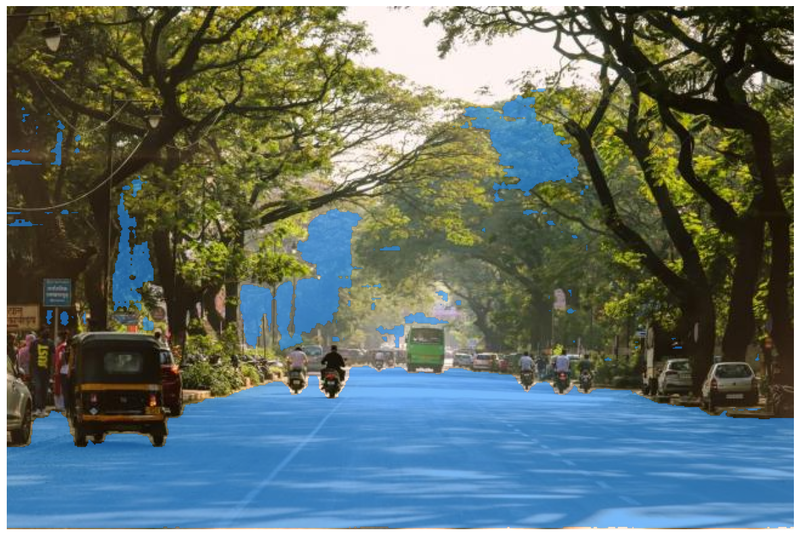

Image Segmentation
[ ]:
# !pip install transformers
# !pip install timm
# !pip install torchvision
[2]:
from transformers.utils import logging
logging.set_verbosity_error()
from transformers import pipeline
Lets try segmentation by masking (Segment Anything Model). We will use SlimSAM-uniform-77. Unlike usual image segmentation, he we guide the model on which object specifically to be segemented out (py passing object pixel location or bounding box on image). This does not output the class of mask.
[21]:
raw_image = Image.open('green.jpg')
raw_image
[21]:
[42]:
import matplotlib.pyplot as plt
import numpy as np
import torch
def show_mask(mask, ax, random_color=False):
if random_color:
color = np.concatenate([np.random.random(3),
np.array([0.6])],
axis=0)
else:
color = np.array([30/255, 144/255, 255/255, 0.6])
h, w = mask.shape[-2:]
mask_image = mask.reshape(h, w, 1) * color.reshape(1, 1, -1)
ax.imshow(mask_image)
def show_pipe_masks_on_image(raw_image, outputs):
plt.imshow(np.array(raw_image))
ax = plt.gca()
for mask in outputs["masks"]:
show_mask(mask, ax=ax, random_color=True)
plt.axis("off")
plt.show()
def show_mask_on_image(raw_image, mask, return_image=False):
if not isinstance(mask, torch.Tensor):
mask = torch.Tensor(mask)
if len(mask.shape) == 4:
mask = mask.squeeze()
fig, axes = plt.subplots(1, 1, figsize=(15, 15))
mask = mask.cpu().detach()
axes.imshow(np.array(raw_image))
show_mask(mask, axes)
axes.axis("off")
plt.show()
if return_image:
fig = plt.gcf()
return fig2img(fig)
[38]:
#Faster Inference
from transformers import SamModel, SamProcessor
model = SamModel.from_pretrained("Zigeng/SlimSAM-uniform-77")
processor = SamProcessor.from_pretrained("Zigeng/SlimSAM-uniform-77")
# Point on object to be segmented
input_points = [[[500, 700]]]
inputs = processor(
raw_image,
input_points=input_points,
return_tensors="pt"
)
import torch
with torch.no_grad():
outputs = model(**inputs)
predicted_masks = processor.image_processor.post_process_masks(
outputs.pred_masks,
inputs["original_sizes"],
inputs["reshaped_input_sizes"]
)
[40]:
predicted_mask = predicted_masks[0]
outputs.iou_scores
[40]:
tensor([[[0.9488, 0.9654, 0.3679]]])
[58]:
for i in range(1):
show_mask_on_image(raw_image, predicted_mask[:, i])

Lets try Depth Estimation using Intel’s dpt-hybrid-midas
[68]:
# creating pipeline
depth_estimator = pipeline(task="depth-estimation", model="Intel/dpt-hybrid-midas")
# loading image
raw_image = Image.open('india.jpg')
display(raw_image)
# inference
output = depth_estimator(raw_image)
prediction = torch.nn.functional.interpolate(
output["predicted_depth"].unsqueeze(1),
size=raw_image.size[::-1],
mode="bicubic",
align_corners=False,
)
output = prediction.squeeze().numpy()
formatted = (output * 255 / np.max(output)).astype("uint8")
depth = Image.fromarray(formatted)
[69]:
print("Predicted Depths : ")
depth
Predicted Depths :
[69]: